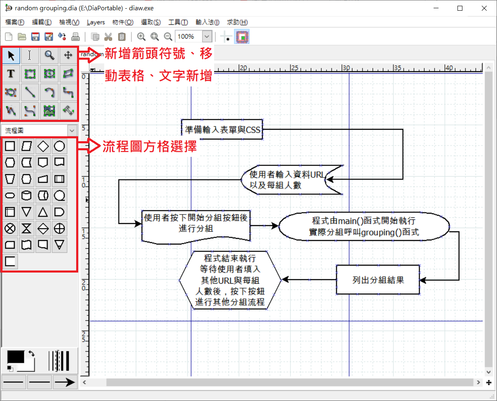
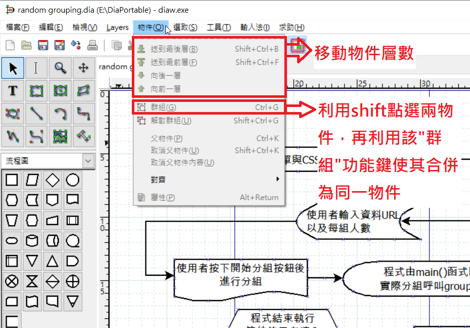
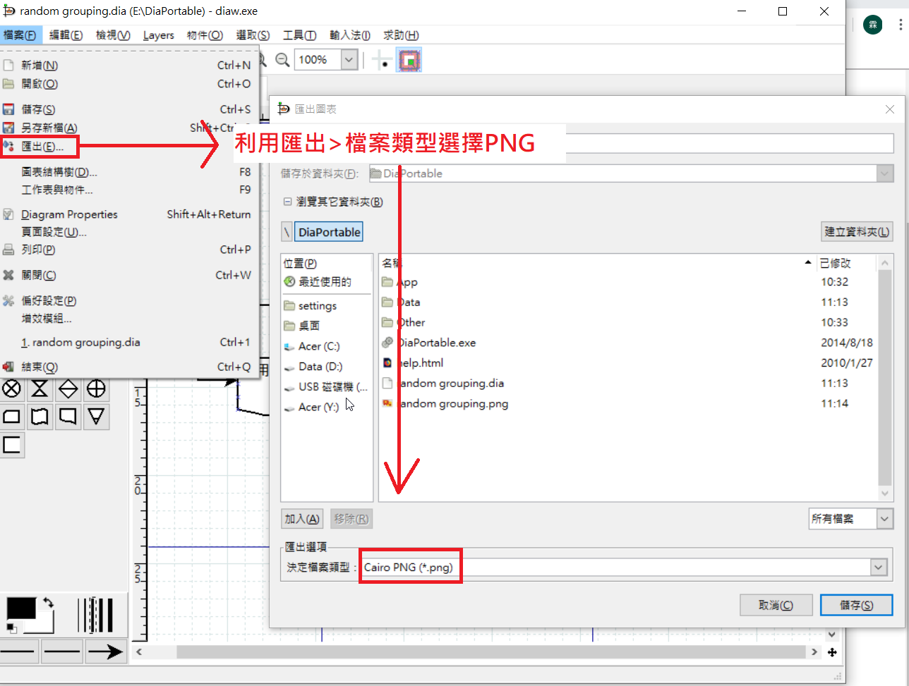

期末任務(圖文介紹) <<
Previous Next >> SSH新增
dia
程式功能介紹
1.介紹使用功能

2.合併功能介紹

3.匯出圖檔

4.匯出圖檔

目前於程式內無法直接輸入中文字，暫代解決辦法為利用記事本編輯好文字後貼上
使用辦法
下載Dia portable

2.安裝後執行安裝檔

3.完成後打開該程式

4.匯出之圖檔

-----------------------------------------------------------------------------------------------------
程式用途
【Dia】是一套流程圖排版製作軟體，以模組化來設計，用來畫各式各樣的圖形。如：E-R關係圖、UML圖、流程圖及網路圖等等。
與Office的 Visio功能雷同，不過Visio就是要錢的，而且體積也比較龐大，支援了 UML 靜態結構流程圖和網路流程圖，目前可以讀取和儲存流程圖到自定的檔案格式和匯出成 postscript，並且藉由XML可以新增多種圖形，支援EPS, SVG, XFIG, WMF及PNG等多種檔案格式輸出。內建許多常用的圖示，如網路架構及一般流程圖。
操作影片
期末任務(圖文介紹) <<
Previous Next >> SSH新增